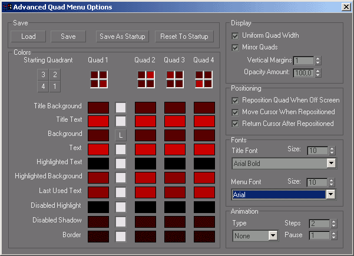

Bug des menus contextuels
Le clic droit au-dessus de la fenêtre de travail de gmax ouvre les menus contextuels. Il se peut que le gamepack Trainsim perturbe le fonctionnement normal de ces menus les rendant illisibles.
C'est un problème de police. Voici la marche à suivre pour le régler.
Cliquer sur le menu Customize puis le sous menu Customize User Interface.
Cela ouvre la fenêtre suivante. Cliquer sur l'onglet Quads puis, en bas à droite, sur le bouton Advanced options.
Dans la fenêtre qui s'ouvre, le menu déroulant Menu Font affiche probablement Arial Bold. Modifier en Arial ou une autre police de votre choix. Les menus contextuels affichent désormais les commandes lisiblement.
